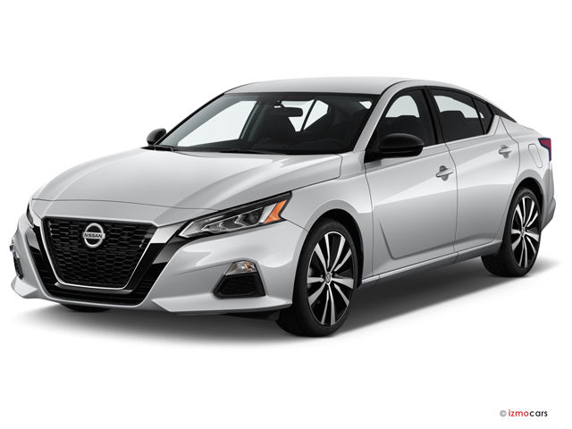
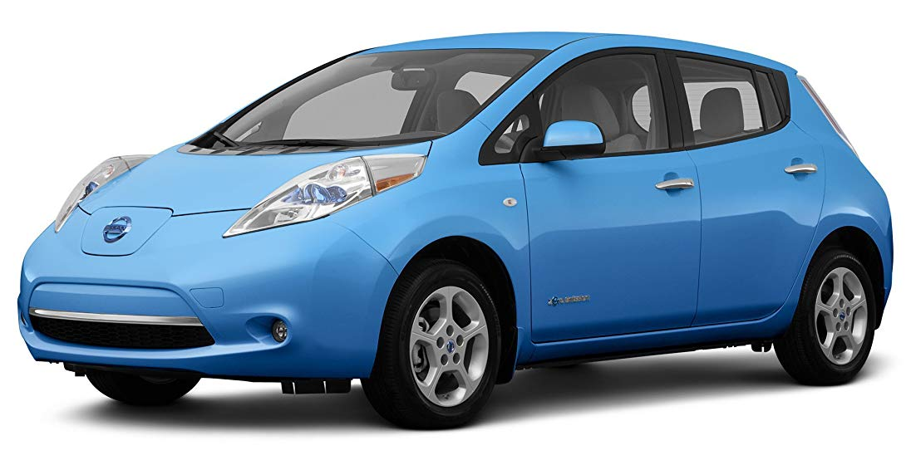

Popular models
Nissan Leaf
Nissan Altima
Nissan Qashqai

Nissan Motor Co., Ltd. (Japanese: 日産自動車株式会社 Hepburn: Nissan Jidōsha Kabushiki-gaisha), usually shortened to Nissan (/ˈniːsɑːn/ or UK: /ˈnɪsæn/; Japanese pronunciation: [ɲissaɴ]), is a Japanese multinational automobile manufacturer headquartered in Nishi-ku, Yokohama. The company sells its cars under the Nissan, Infiniti, and Datsun brands with in-house performance tuning products labelled Nismo. The company traces its name to the Nissan zaibatsu, now called Nissan Group.
Since 1999, Nissan has been part of the Renault–Nissan–Mitsubishi Alliance, a partnership between Nissan of Japan, Mitsubishi Motors of Japan and Renault of France. As of 2013, Renault holds a 43.4% voting stake in Nissan, while Nissan holds a 15% non-voting stake in Renault. From 2009 to 2017 Carlos Ghosn served as CEO of both companies. In February 2017 Ghosn announced he would step down as CEO of Nissan on 1 April 2017, while remaining chairman of the company.[7] On 19 November 2018, Ghosn was fired as chairman following his arrest for the alleged underreporting of his income to Japanese financial authorities.[8] After 108 days in detention, Ghosn was released on bail, but after 29 days he was again detained on new charges (4 April 2019). He'd been due to hold a news conference, but instead his lawyers released a video of Ghosn alleging this 2018-2019 Nissan scandal is itself evidence of value destruction and Nissan corporate mismanagement.[9]
In 2013, Nissan was the sixth largest automaker in the world, after Toyota, General Motors, Volkswagen Group, Hyundai Motor Group, and Ford.[10] Taken together, the Renault–Nissan Alliance would be the world's fourth largest automaker.[citation needed] Nissan is the leading Japanese brand in China, Russia and Mexico.[11]
In 2014 Nissan was the largest car manufacturer in North America.[12]
Nissan is the world's largest electric vehicle (EV) manufacturer, with global sales of more than 320,000 all-electric vehicles as of April 2018.[13] The top-selling vehicle of the car-maker's fully electric lineup is the Nissan LEAF, an all-electric car and the world's top-selling highway-capable plug-in electric car in history.